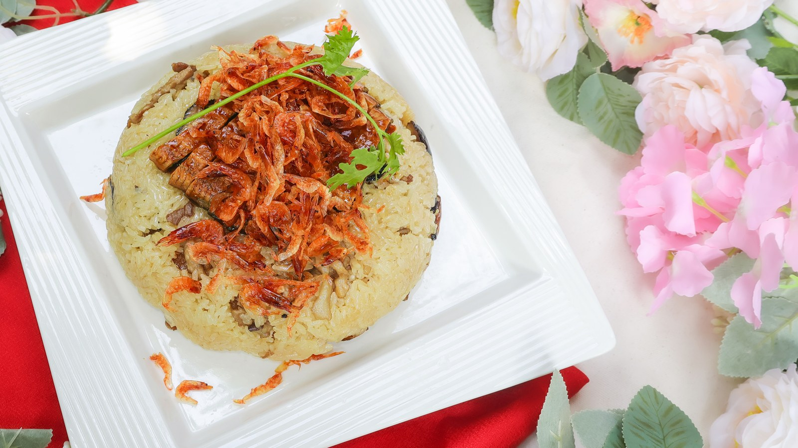

DAY 01 · LUNCH
認識特色餐點 饗二林莊園｜午餐
以二林在地米、蕎麥與季節農產為料理素材，呈現農產從田間轉化為餐飲的價值。
 餓，林時起意！ERLIN SLOW TRAVEL
餓，林時起意！ERLIN SLOW TRAVEL每一餐都對應一種地方體驗；住宿讓小旅行真正成為二天一夜。
在田園裡住一晚，把白天的農遊延續成晚間的相聚。理想大苑提供包棟空間；理想星苑採包層方式，設有電梯，適合家族、朋友與團體同行。
設備使用提醒｜卡拉OK免費使用，歡唱至22:00；電動麻將需押金NT$3,000，退房檢查無誤後匯退，押金不計入團費。戶外戲水池依季節與現場安排開放。
特色資料：業者提供資訊、觀光署理想大苑旅宿介紹 ↗
把二林的土地與人情，端上餐桌。
庭園式餐廳結合團體聚餐與客製桌菜，適合里民活動、大型家族一起圍桌用餐。
官方桌菜方案可見饗林五拼盤、臘味米糕叉燒酥等料理；季節活動亦曾推出火龍果刈包。菜色依當季食材與預訂方案調整。
延續企劃以在地米、蕎麥與季節農產串聯地方餐桌的方向，實際入菜內容請於團體訂餐時向餐廳確認。
一桌熱菜，盛起二林的晚餐時光。

以台式料理與團體合菜，承接第一天的晚餐安排。大家圍桌共食，也把白天的農遊故事接著聊下去。
店家公開菜單曾列白斬鹽水鵝、三杯白鰻魚、醬燒白鰻魚及蒜片帶骨牛小排，可作為團體詢菜的參考。
依人數與預算洽詢桌菜，搭配魚、肉、蔬菜與主食。菜單會更新，實際供應及價格以店家確認為準。
從一碗熱食，走進小鎮的早晨。

早餐不只是一餐，也是一段觀察在地居民日常的散策。保留原企劃的市場早餐安排，依店家營業情形自由選擇或集中取餐。
二林市場周邊代表小吃之一。酥炸外皮搭配豬肉、筍丁與醬料，是這間老店的辨識度；可配清湯品嚐。
採小組步行分流，事先集合與點餐；若長輩不便久站，建議先協調取餐。圖片為肉圓壽實景，不代表所有市場店家的早餐。

把米食的香氣，從手作帶到餐桌。